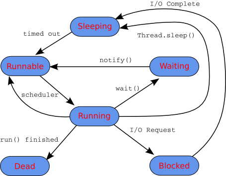

One of the most common forms of cooperating threads is the producer/consumer pair. The producer generates data that the consumer uses. The producer and consumer each run in their own thread. The producer should only produce as fast as the consumer can consume.
The unix pipe command,
cmd1 | cmd2
creates a producer consumer pair, the first command's output is sent to the second command's standard input. The producer is suspended if the consumer cannot keep up. The consumer is suspended if it attempts to consume too much.
The Link interface will be used to connect the producer to the consumer. By defining an interface, we are free to provide different implementations.
/**
* Object o is send via the Link with send,
* recv is used to retrieve the object,
* close indicates that no more objects will be
* sent via the link.
* The number of object stored in the link is given
* by getSize().
*/
interface Link {
void send( Object o );
void close();
Object recv();
int getSize();
}
The producer will generate data and send it via the link to the consumer. The link must block the producer if the consumer does not keep up.
public class Producer extends Thread {
private Link link;
private int totalItems;
private boolean flush;
public Producer( Link link, int totalItems, boolean flush ) {
this.link = link;
this.totalItems = totalItems;
this.flush = flush;
}
public void run() {
for( int items = 0 ; items < totalItems; items++ ) {
Integer i = new Integer( items);
System.out.println("sending: " + i );
if ( flush ) System.out.flush();
link.send( i );
System.out.println( "sent: " + i + " size: "
+ link.getSize() );
if ( flush ) System.out.flush();
}
link.close();
}
}
The consumer thread will attempt to retrieve objects from the link. The link should block if there is no available objects.
public class Consumer extends Thread {
private Link link;
public Consumer( Link link ) {
this.link = link;
}
public void run() {
while( true ) {
do {
System.out.println("wait to recv" );
Object o = link.recv();
if ( o == null ) return;
Integer i = (Integer)o;
System.out.println("recv: " + i );
} while ( link.getSize() != 0 );
try {
Thread.sleep( 10 );
}
catch( InterruptedException e ) {
}
}
}
}
Test the produce/consumer pair by sending a fixed number of items, before closing the link. The usage is:
java TestProdConsum num_items link_sizewhere link_size is the size of the buffer in the link and num_items is the number of items to produce.
public class TestProdConsum {
public static void main( String[] args ) {
if ( args.length != 3 ) {
System.out.println("usage: java TestProdConsum prods buf flush");
System.exit( 1 );
}
try {
int products = Integer.parseInt( args[0] );
int bufSize = Integer.parseInt( args[1] );
boolean flush = args[2].equals("flush");
Link link = new Bounded( bufSize );
Producer prod = new Producer( link, products, flush );
Consumer consum = new Consumer( link );
consum.start();
prod.start();
}
catch( Exception e ) {
e.printStackTrace();
}
}
}
% java TestProdConsum 5 1 t
wait to recv
sending: 0
sent: 0 size: 0
recv: 0
sending: 1
sent: 1 size: 1
sending: 2
wait to recv
recv: 1
wait to recv
sent: 2 size: 1
recv: 2
sending: 3
sent: 3 size: 1
sending: 4
wait to recv
recv: 3
wait to recv
sent: 4 size: 1
recv: 4
wait to recv
If the buffer is large, then the producer can produce more items before being suspended.
% java TestProdConsum 5 5 t
wait to recv
sending: 0
sent: 0 size: 0
recv: 0
sending: 1
sent: 1 size: 1
sending: 2
sent: 2 size: 2
sending: 3
sent: 3 size: 3
sending: 4
sent: 4 size: 4
wait to recv
recv: 1
wait to recv
recv: 2
wait to recv
recv: 3
wait to recv
recv: 4
wait to rec
Mixture of producing and consuming is shown by the following.
% java TestProdConsum 10 3 t
sending: 0
wait to recv
sent: 0 size: 1
recv: 0
sending: 1
sent: 1 size: 1
sending: 2
sent: 2 size: 2
sending: 3
sent: 3 size: 3
sending: 4
wait to recv
recv: 1
wait to recv
sent: 4 size: 3
recv: 2
wait to recv
sending: 5
recv: 3
wait to recv
sent: 5 size: 2
recv: 4
wait to recv
sending: 6
recv: 5
wait to recv
sent: 6 size: 1
recv: 6
sending: 7
sent: 7 size: 1
sending: 8
sent: 8 size: 2
sending: 9
sent: 9 size: 3
wait to recv
recv: 7
wait to recv
recv: 8
wait to recv
recv: 9
wait to recv
A fixed size bounded buffer is:
public class Bounded implements Link {
private Object[] buffer;
private int head, tail, len;
private boolean closed;
public Bounded( int size ) {
buffer = new Object[size];
head = tail = 0;
len = 0;
closed = false;
}
public synchronized void send( Object o ) {
while ( len >= buffer.length ) {
try {
wait();
}
catch( InterruptedException ex ) {
}
}
buffer[ head ] = o;
head = ( head + 1 ) % buffer.length;
len++;
notify();
}
public synchronized Object recv() {
if ( len == 0 && closed )
return null;
while ( len == 0 ) {
try {
wait();
}
catch( InterruptedException ex ) {
}
if ( len == 0 && closed ) return null;
}
Object o = buffer[tail];
tail = (tail+1) % buffer.length;
len--;
notify();
return o;
}
public synchronized void close() {
closed = true;
notify();
}
public synchronized int getSize() {
return len;
}
}
Deadlock occurs when two or more threads attempt to lock resources already claimed by other threads. If thread t1 has resource r1 and thread t2 has resource r2 and t1 attempts to lock r2, while t2 is trying to lock r1, then the threads are deadlocked. These thread are now stuck since they will not release any resource until they get a resource which is already locked. The classic deadlock is shown by:
public class DeadLock extends Thread {
private Object res1, res2;
public DeadLock( String name, Object res1, Object res2 ) {
super( name );
this.res1 = res1;
this.res2 = res2;
}
public void run() {
// lock res1
synchronized( res1 ) {
System.out.println( getName() + ": locked " + res1 );
try {
Thread.sleep( 100 );
}
catch( InterruptedException ex ) {
}
// now try to get res2
synchronized( res2 ) {
System.out.println( getName() + ": locked " + res2 );
}
}
}
public static void main( String[] args ) {
Object r1 = new Object();
Object r2 = new Object();
DeadLock t1 = new DeadLock("t1", r1, r2);
DeadLock t2 = new DeadLock("t2", r2, r1);
t1.start();
t2.start();
Thread[] threads = new Thread[10];
int num = Thread.enumerate( threads );
for( int i = 0 ; i < num; i++ ) {
System.out.println( threads[i] );
}
}
}
The program's output is:
% java DeadLock
Thread[main,5,main]
Thread[t1,5,main]
t1: locked java.lang.Object@65de41c3
t2: locked java.lang.Object@38d8fb2b
Thread[t2,5,main]
^C
%
What simple change would eliminate the deadlock from the above code?
The Deadlock class will always deadlock since the sleep force t1 to get r1 and t2 to get r2 before the threads attempt to get the next resource. DeadLock1 shows a more realistic situation where the deadlock will eventually happen, but when is not known. This deadlock occurs when a thread has captured res1 but is suspended before it captures res2. The second thread can now capture res2, and then can not get res1.
public class DeadLock1 extends Thread {
private Object res1, res2;
public DeadLock1( String name, Object res1, Object res2 ) {
super( name );
this.res1 = res1;
this.res2 = res2;
}
public void run() {
// lock res1
synchronized( res1 ) {
System.out.println(getName() + ": locked " + res1);
// now try to get res2
synchronized( res2 ) {
System.out.println(getName() + ": locked " + res2);
}
}
}
public static void main( String[] args ) throws Exception {
int count = 0;
while( true ) {
Object r1 = new Object();
Object r2 = new Object();
DeadLock1 t1 = new DeadLock1("t1", r1, r2);
DeadLock1 t2 = new DeadLock1("t2", r2, r1);
t1.start();
t2.start();
// wait for t1 and t2 to die before restarting
t1.join();
t2.join();
System.out.println("loop = " + count );
count++;
}
}
}
In the following experiment, deadlock occured after 108045 steps.
% taskset -c 0 java DeadLock1
.
.
.
loop = 108043
t1: locked java.lang.Object@7900f481
t1: locked java.lang.Object@2db47f37
t2: locked java.lang.Object@2db47f37
t2: locked java.lang.Object@7900f481
loop = 108044
t1: locked java.lang.Object@3652bece
t1: locked java.lang.Object@726ce23e
t2: locked java.lang.Object@726ce23e
t2: locked java.lang.Object@3652bece
loop = 108045
t1: locked java.lang.Object@77154a6c
t2: locked java.lang.Object@16c93588
RealisticDeadLock presents a more realistic deadlock situration.
import java.io.PrintStream;
class MyCounter {
int count;
MyCounter() {
count = 0;
}
}
class T1 extends Thread {
protected PrintStream out;
protected MyCounter counter;
public T1( String name, MyCounter counter, PrintStream out ) {
super( name );
this.counter = counter;
this.out = out;
}
public void run() {
out.println(getName() + ": running ");
synchronized( out ) {
out.println(getName() + ": locked " + out);
// now try to get res2
synchronized( counter ) {
out.println(getName() + ": locked " + counter);
counter.count++;
out.println(getName() + " c=" + counter.count);
}
}
}
}
// this is an example of bad inheritance
class T2 extends T1 {
public T2( String name, MyCounter counter, PrintStream out ) {
super( name, counter, out );
}
public void run() {
out.println(getName() + ": running ");
synchronized( counter ) {
out.println(getName() + ": locked " + counter);
counter.count++;
synchronized( out ) {
out.println(getName() + ": locked " + out);
out.println(getName() + " c=" + counter.count);
}
}
}
}
public class RealisticDeadLock {
public static void main( String[] args ) throws Exception {
MyCounter c = new MyCounter();
while( true ) {
T1 t1 = new T1("t1", c, System.out);
T2 t2 = new T2("t2", c, System.out);
t1.start();
t2.start();
// wait for t1 and t2 to die before restarting
t1.join();
t2.join();
}
}
}
A deadlock with 2 CPUs
% taskset -c 0,1 java RealisticDeadLock
.
.
.
t1: running
t1: locked java.io.PrintStream@136bf0aa
t1: locked MyCounter@5ba88001
t1 c=39
t2: running
t2: locked MyCounter@5ba88001
t2: locked java.io.PrintStream@136bf0aa
t2 c=40
t1: running
t2: running
t1: locked java.io.PrintStream@136bf0aa
It did not deadlock with only one CPU after 5577849 iterations. Thus deadlock with with CPU appears to be uncommon.
% taskset -c 0 java RealisticDeadLock
.
.
.
t1: running
t1: locked java.io.PrintStream@60607135
t1: locked MyCounter@5ba88001
t1 c=5577847
t2: running
t2: locked MyCounter@5ba88001
t2: locked java.io.PrintStream@60607135
t2 c=5577848
t1: running
t1: locked java.io.PrintStream@60607135
t1: locked MyCounter@5ba88001
t1 c=5577849
Threads can be assigned an priority, it has little effect on current JVMs.
class Ticking extends Thread {
private Ticking[] threads;
private int id;
private int limit;
private int interval;
private int inc;
public Ticking(
Ticking[] threads, int id,
int limit, int interval, int pri )
{
this.threads = threads;
this.id = id;
this.limit = limit;
this.interval = interval;
setPriority( pri );
}
public int getInc() {
return inc;
}
private int[] spin() {
int loops = 10000;
int[] d = new int[loops];
while ( loops > 0 ) {
loops--;
d[loops] = loops;
}
return d;
}
public void run() {
for( inc = 0 ; inc < limit; inc++ ) {
if ( ( inc % interval) == 0 ) {
synchronized( System.out ) {
System.out.print( "thread: " + id + " :");
for( int i = 0 ; i < threads.length; i++ ) {
System.out.print( " " + threads[i].getInc() );
}
System.out.println();
}
}
int[] d = spin();
}
}
}
/**
* MAX_PRIORITY = 10
* MIN_PRIORITY = 1
* NORM_PRIORITY = 5
*
* The effect of priority is implementation specific.
*/
public class Scheduling {
public static void main( String[] args ) {
final int limit = 100000;
final int interval = 10000;
Ticking[] threads = new Ticking[ args.length ];
for( int i = 0 ; i < args.length; i++ ) {
int pri = Integer.parseInt( args[i] );
Ticking t =
new Ticking(threads, i, limit, interval, pri );
System.out.println( i + "/" + t.getPriority() );
threads[i] = t;
}
for( int i = 0 ; i < args.length; i++ ) {
threads[i].start();
}
}
}

The most important methods of a thread object are:
The following Thread methods should be avoided: suspend, resume, stop.